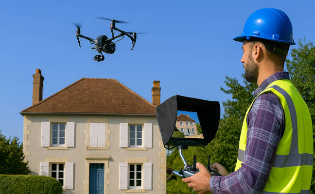

Photos et vidéos aériennes
Nous capturons des images et vidéos aériennes en haute qualité pour valoriser vos projets immobiliers, touristiques ou professionnels, avec un rendu professionnel.

Prises de vues aériennes
Avec la caméra DJI Zenmuse X5S (4K, 20 MP, 12-bit RAW) et un stabilisateur 3 axes, nous réalisons des prises de vues à 10-100 m d’altitude, livrées en HD après un brief personnalisé. Dès 200 €.
Post-traitement
Retouche et montage avec Photoshop, Lightroom et Premiere Pro pour optimiser vos images et vidéos. Livraison rapide sous 48-72h pour un contenu prêt à l’emploi. Dès 96 €.